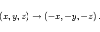
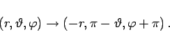
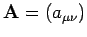

Inhalt Index DeskTop Bronstein

 Lineare Algebra Tensoren Pseudotensoren Punktspiegelung am Koordinatenursprung
Lineare Algebra Tensoren Pseudotensoren Punktspiegelung am Koordinatenursprung


Unter Koordinateninversion oder Rauminversion versteht man die Spiegelung der Ortskoordinaten von Raumpunkten am Koordinatenursprung. In einem dreidimensionalen kartesischen Koordinatensystem bedeutet Rauminversion eine Umkehr der Vorzeichen der Koordinatenachsen:
|  | (4.98) |
Dadurch wird ein rechtshändiges in ein linkshändiges Koordinatensystem überführt. Analoges gilt für andere Koordinatensysteme. In Kugelkoordinaten ergibt sich:
|  | (4.99) |
Bei Spiegelungen dieser Art bleiben die Längen von Vektoren und die Winkel zwischen ihnen unverändert. Der Übergang wird durch eine lineare Transformation vermittelt.
Die Transformationsmatrix  einer linearen Transformation im dreidimensionalen Raum gemäß (4.65) hat bei Rauminversion die folgenden Eigenschaften:
Für die Komponenten eines Tensors n-ter Stufe folgt damit aus (4.68)
Das bedeutet: Unter einer Punktspiegelung am Koordinatenursprung bleibt ein Tensor 0. Stufe, also ein Skalar, ungeändert, ein Tensor 1. Stufe, also ein Vektor, ändert sein Vorzeichen, ein Tensor 2. Stufe bleibt ungeändert, usw.